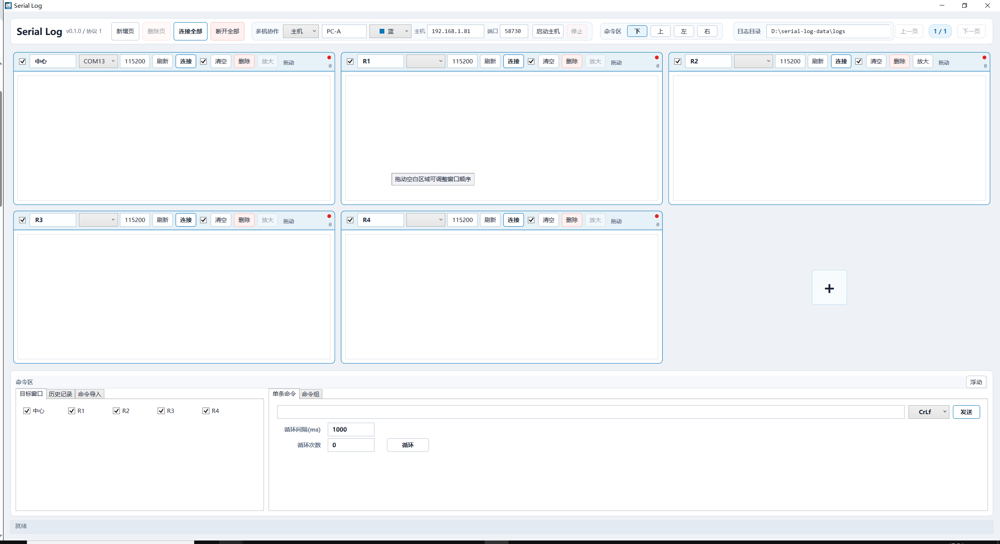

连接设备
刷新串口、设置波特率，连接单个或全部本地窗口。

Windows / Serial Log v0.1.0实时输出、颜色标识、滚动控制和日志留痕，围绕现场排障的节奏设计。
串口状态、波特率、连接操作和日志计数集中在窗口顶部，下面的日志区专注于读取与定位。
从单个串口到多台电脑，常用操作都有明确的入口和状态反馈。
01 / OBSERVE
把中心、R1、R2 等窗口放在同一页面，连接状态和输出节奏一眼可见。窗口可以拖动、放大、排序，也可以隐藏命令区专注看日志。
选中一个步骤，查看它如何落到实际工作流中。
刷新串口、设置波特率，连接单个或全部本地窗口。
在单条命令、命令导入或命令组之间切换，支持循环执行。
串口界面保持紧凑时间戳，完整年月日写入日志文件并自动分段。
COM7 → 460800 → READY真实工作界面比装饰性示意图更能说明 Serial Log 的使用方式。
01 / 02打开 README，了解安装、使用和多机协作方式。